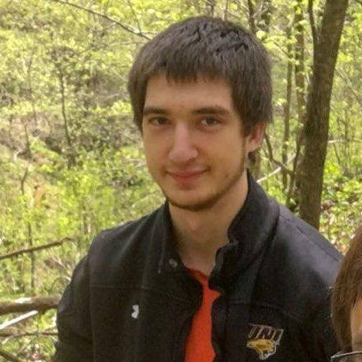
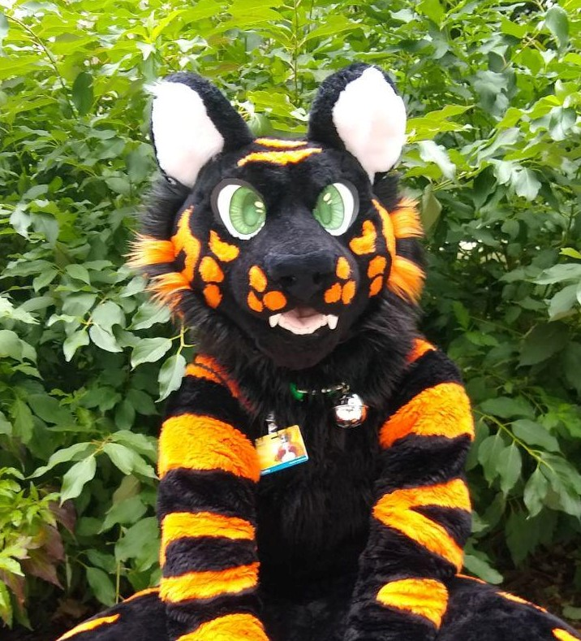

About Me
 I was born in Indianapolis, Indiana. I am the youngest of 5 siblings, so I am more quiet and reserved but also tough and competitive. I moved to South Bend, IN during grade school until after my freshman year of high school. Then, I moved to Moline, IL where I finished high school. I then decided to go to the University of Northern Iowa. I chose UNI because my brother was currently attending there, it was a good distance from home, and it is a smaller campus. I basically chose Computer Science as my major because I play a lot of video games and there wasn't anything else that I was interested in. Though, I do like solving problems and understanding how things work. I graduated May 8, 2020 with a Bachelors of Science. I enjoyed my CS courses and I do like programming. I am still unsure of what I want to do, but I think I want to be a full stack developer so I can be more versatile and really understand all the aspects of software development. I'm excited to get out into the world, learn new things, and start my career. My overall goal in life is to be a kind, simple person.
 I like physical activities such as walks, running, hiking, biking, and playing sports. I want to get in to races and obstacle courses such as 'Spartan Race', 'Tough Mudder', triatholons, and things like that. I spend a lot of time playing video games or watching Netflix. My favorite games are Call of Duty, League of Legends, and Super Animal Royale. Some of my favorite shows are 'The Office', 'Supernatural', 'The 100', 'Dexter', 'Breaking Bad', and more. The most unique thing about me would probably be that I have an animal costume (fursuit) that I like to wear.
Bowling:
My sisters, dad, step-mom, nephew, adopted-niece, and friend
Brother's Wedding:
My siblings, dad, sister-in-law, and nephew
Brother's Wedding:
My siblings